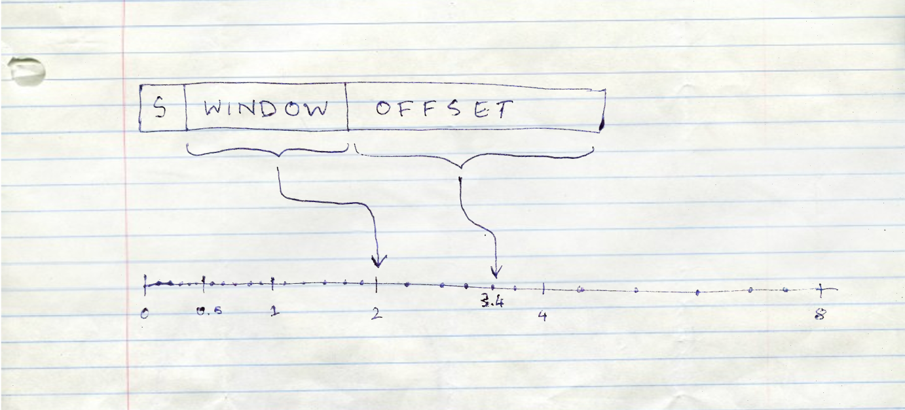

This post is a crosspost of the original at the PES Open Source blog
Yeah, I know this year has been terrible. Maybe the only silver lining is that you don’t have to worry about the pandemic anymore with the nuclear winter above and all.
But you still gotta eat and resources in this underground bunker are scarce. Luckily you won the contract to conduct the post mortem for how you got here in the first place. So you clone the source of this disaster.
underground@pc-3 ~$ git clone http://www.un.org/peace/no_nukes_guaranteed.git
Cloning into 'no_nukes_guaranteed'...
remote: Counting objects: 21824551877, done.
remote: Compressing objects: 100% (115770/115770), done.
Receiving objects: 100% (21824551877/21824551877), 191754.84 MiB | 3.00 KiB/s
underground@pc-3 ~$ cd no_nukes_guaranteed
underground@pc-3 ~/no_nukes_guaranteed $ ls -a
.git .github/ .secret_keys bootstrap_php/
no_nukes.py public/ readme.xlsx scipy_src.txt
style.css winrar.exe worm.so
Ah yes. You know Python! Let’s see what went wrong in no_nukes.py
a = 0.1
b = 0.2
# lolz this will never launch nukes
if a + b == 0.3:
do_nothing()
else:
launch_nukes()That’s bizarre. Clearly 0.1 + 0.2 is equal to 0.3 right? It should have done nothing!
Well given that there’s not much else to do, you decide to try it out on a Python interpreter.
underground@pc-3 ~/no_nukes_guaranteed $ python3
Python 3.6.9 (default, Aug 18 2020, 01:56:04)
[GCC 8.4.0] on linux
Type "help", "copyright", "credits" or "license" for more information.
>>> 0.1 + 0.2 == 0.3
False
>>> # huhh
...
>>> 0.1 + 0.2
0.30000000000000004
1913
Leonardo Torres y Quevado wrote a paper called “Essays on Automatics” which was him flexing over why his electromechanical imaginary computer is better than whatever trendy moth-murdering movable mechanistic calculator Babbage-boy created back then.
In that paper he also almost casually proposed a way to represent real numbers.
25 February 1991
Back before half of humanity exterminated itself with the accidental nuke launch, they were partaking in a mutual cleansing of existence, albeit on a smaller but more deliberate scale. This was the Gulf War and an incoming Iraqi Scud missile had just hit an American Army barracks, killing 28 soldiers. The Patriot Missile Defense systems were supposed to intercept this missile, but for whatever reason the Scud went outside the Patriot’s tracking range. A report found that in eight hours the internal clock was off by 0.0275 seconds. In a 100 hours it was off by 0.34 seconds. It seemed to be proportionally increasing with time.
Taking into account account the speed of the Scud, which was about 1.6 kilometers per second, it had already beat the Patriot by $0.34 \times 1.6 = 0.544$ kilometers.
Python is a horrendous joke of a language, you think. Clearly it’s not a language for Real Programmers. It deserves to be resigned to making SEO blogspam generators with that GPT3 nonsense.
So you whip out the trusty Go, merely as a mental exercise of how you would have prevented this disaster.
package main
import (
"fmt"
)
func main() {
fmt.Println(0.1 + 0.2 == 0.3)
}true. Excellent. And now to finish this up and make the equivalent nukes_will.go.
func main() {
var a float64 = 0.1
var b float64 = 0.2
if a+b == 0.3 {
fmt.Println("I saved the day!")
} else {
fmt.Println("Nukes launched!")
}
}And then you smugly hit Run.
Nukes launched!
Horrified, you reach out to the other languages.
Clojure:
(+ 0.1 0.2) ; 0.30000000000000004
Julia:
.1 + .2 # 0.30000000000000004
Haskell:
0.1 + 0.2 -- 0.30000000000000004
What a pity! These were supposed to be sophisticated languages. You found that some languages like PHP and GNU Octave did return 0.3 but, they did not pass the equality test which would have stopped the nukes.
Your stomach grumbles. You haven’t eaten. Well, you’ve found the source, might as well cash in the canned fish you’d get for this contract. You did find the cause, after all.
As you reach for the power button, you feel your fingers tense up. Your mind is not letting you do this.
You have to know.1
2020, in a parallel universe with no pandemics or nuclear meltdowns
Yogenderprakashan Sarvepalli was hanging out with his buddy Anu at the college library.
“Anu, I have been trying to hack at the source code of Money Bunny so that everytime the Bunny hits the Evil Ducks™, I get extra coin.”
Anu rolled her eyes.
“Look,” he sighed, “There’s this handler which changes the game state everytime I punch the Ducks. It should increment my money variable by one. It’s doing diddly-squat.”
“Yoge, you know full well I am not going through that Rabbit nonsense.”
“At least have a look at this snippet I made that does the same thing,” he said, tilting his laptop to her.
float money_inc(money) {
return money + 1;
}
int main() {
// say I punched 100,000 evil ducks
float money = 0;
for (int i = 0; i < 100000; i++) {
money = money_inc(money);
}
printf(money);
return 0;
}“Why does this work, but not my progra—”
“Why are you using a float?”
“I don’t know, because that’s what the game does?”
“That’s the problem. I read about this in a blog the other day.”
“Bu-but there’s no problem in this code, it prints 100000.”
“Ay you wait da,” she said while ripping a page from her lab observation book.

“You see, the higher a floating point number goes, the less precise it gets.
You can think of floating point numbers having a sign bit, a window and an offset. The window tells us between which consecutive power of two the number is in. So something like:
$[0.5, 1]$ if we have the window as $-1$ (because $2^{-1}$),
$[2, 4]$ if we have the window as $1$ (because $2^{1}$),
$[4, 8]$ if we have the window as $2$ (because $2^{2}$)
…and so on.”
“The offset helps us locate the exact number in that range, basically telling us that, if we divide up the range in the window into equal parts, at what index in that range will we land on the number we want to represent?”
“So if you notice that the larger the number in our window, the larger the range of numbers it can represent. Hence, we lose precision as we can divide the range only by the size of our offset.”
Yoge scratched his head.
“Okay,” she sighed, “Say my offset can take a number from 1 to 10. The window tells me our number is between 1 and 2. What would my offset value be, to represent 1.4?”
“Well the offset should be 4, because between 1 and 2, we can go up by only 0.1 if we divide it equally, and the fourth such number will give us 1.4, because $1 + 4 \times 0.1$”
“Correct. Now say our range is from 2 to 4. How do I get… 2.5?”
Yoge thought for a while, and said, “Oh, you can’t.”
“If I divide the numbers between 2 and 4 by 10, I can only go up by 0.2 with each index. So I can represent 2.4 and 2.6, but not 2.5!”
“Exactly. So the larger your number—”
“The lesser the precision at which I can represent it,” said Yoge, wide-eyed.
“But what does this have to do with Money Bunny?” he said.
“How much coin did you have in the game?”
“A lot actually,” said Yoge smugly – “Something like 10000000000000000 at least with all my hacking going on.”
“Yes, and with a float that large, you are getting so imprecise that adding one does not let you jump to the next number. It just rounds back to the same number. Try adding a larger number and it should work. Or better yet, ask the developer to not use floats for a value that keeps increasing!”2
Yogenderprakashan Sarvepalli was so enlightened by this realization that he started levitating and slowly ascended to the heavens above.
You have already gone through the printed copy of IEEE 754 that you found lying around the office. It didn’t make much sense to you with it’s overly technical language, and the fact that the rats chewed off some of the sheets did not help.
But you did figure out a few things.
- The languages that did show
0.1 + 0.2 = 0.3were just sheltering you from the harsh reality. The moment you configure the language’s print function to show upto 17 digits, you are presented with the all too familiar0.30000000000000004 - You were being lied to about
0.1,0.2and0.3. If you set the precision accordingly, you get the following in a Python interpreter:
>>> # this just formats the number to 25 places
...
>>> print(f'{0.1: .25f}')
0.1000000000000000055511151
>>> print(f'{0.2: .25f}')
0.2000000000000000111022302
>>> print(f'{0.3: .25f}')
0.2999999999999999888977698So the comparison fails at multiple levels. You are adding the wrong numbers in the first place to get another wrong number, and then you compare that with a third wrong number, expecting it to be true. Oof.
- Strangely enough you did notice this:
python >>> print(f'{0.5: .50f}') 0.50000000000000000000000000000000000000000000000000It got 0.5 exactly correct!
And you start noticing a pattern while typing away at the interpreter. Any fractional number which can be represented by a constant multiplied by a power of 2 gets represented correctly, like 0.125, 0.625, $\frac{23}{32}$, etc.
Power of two. Of course.
You try to write the binary representation of 0.1 by hand, which gives you:
0.000110011001...
A non-terminating sequence. 1001 at the end goes on forever. This is the binary version of something like $$1⁄3 = 0.333…$$.
At some point the infinite binary sequence is chopped off because they had to fit the float in the 32 bits it was given. Hence the rounding error.
You also notice that when you print with the formatting a number like 1000000000000000.3 the fractional part gets more inaccurate than just 0.3. Looks like floats get less precise as the values increase. So clearly the designers of no_nukes.py should not select whatever floats their boats, and definitely not whatever bloats their floats.
Now that you finally understand the problem, you toy with the idea of what could have been, had you designed this program. Sigh. But one can still hope.
So the way you compare floats in a program is to define a relative tolerance that is acceptable to you, and handle a bunch of edge cases. In Java, it would look something like this:3
public static boolean nearlyEqual(float a, float b,
float epsilon) {
final float absA = Math.abs(a);
final float absB = Math.abs(b);
final float diff = Math.abs(a - b);
if (a == b) { // shortcut, handles infinities
return true;
} else if (a == 0 || b == 0 ||
(absA + absB < Float.MIN_NORMAL)) {
// a or b is zero or both are extremely close to it
// relative error is less meaningful here
return diff < (epsilon * Float.MIN_NORMAL);
} else { // use relative error
return diff / Math.min((absA + absB),
Float.MAX_VALUE) < epsilon;
}
}Yikes.
You know it’s probably good to not really use floats at all. You don’t need the speed here, anyway. When it comes to preventing nukes from ending it all, it’s best to go slower but be precise. Maybe you could write a library that represents numbers digit-wise, and grow and reduce the digits by allocating memory as needed. Actually, does that already exist?
Wait, is that what Go was doing? It seems that Go has its numeric literals be arbitrary precision numbers, which turn into floating point as you put them in variables!
You go through the offline copies of the Python documentation, and find the document for Decimal. Perfect. This fixed point, arbitrary precision representation is what you need. Or what was needed to save the world.
And so you type in,
from decimal import Decimal
a = Decimal('0.1')
b = Decimal('0.2')
# lolz this will never launch nukes
if a + b == Decimal('0.3'):
do_nothing()
else:
launch_nukes()If only you were hired.
Appendix: How to make money disappear
Use floating point! You may think that small rounding errors may not be damaging enough, but do not worry, my friend, for errors collect over time.
Not only can small rounding errors that accumulate do wonders like reduce the index of a stock market to almost half its actual value, but it can also reduce customer credibility, knowing that your calculations are never accurate especially when money is involved :D
/end sarcasm
Further Reading
- Floating Point Guide
- Floating Point Visually Explained
- When do rounding problems become a real problem?
- Floating Point Errors in almost every language
I know what you are thinking. “Why didn’t I google the cause?” For starters the post would be absolutely dull if I allowed that. For now I seal this plot hole with “Google and all other major search engines did not survive that nuclear disaster”.
[return]- It is very likely that the developer of Money Bunny chose a float because a float lets you represent a higher maximum value for the same 4 bits as compared to an integer. But there is no free lunch. Imagine if Unix time was represented as a float instead of an integer. We would have been able to represent time all the way till 5395141535403007094485264579465 AD rather than the very low year of 2038. But it’s good that we did not, because if we did, we would have to increment by 128 by now to be able to change the value of Unix time at all! [return]
- This solution is still prone to issues, and there are other techniques, none of which are a 100% perfect. It’s best to leave this work for standard libraries and that will only save you boilerplate, and hopefully most of the time. [return]